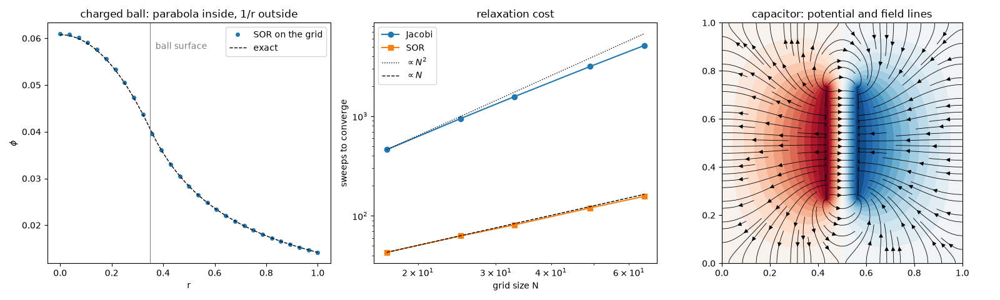

Note
Go to the end to download the full example code.
Poisson’s equation: relaxing the potential of charges and conductors#
Laplace had shown that the gravitational (and so electrostatic) potential satisfies \(\nabla^2\phi = 0\) in empty space. In 1813 Siméon Denis Poisson showed that inside matter the right-hand side is the source density:
Solving it on a grid turns it into a large linear system. Relaxation
methods solve it by repeatedly replacing each value by the average of its
neighbors plus the local source. Jacobi iteration does this for every cell
from the previous sweep. Successive over-relaxation (SOR) updates in place
and overshoots by a factor \(\omega\). A fast sine transform solves
the same system directly. This example uses all three:
solve_poisson() and
solve_poisson_fft().
import time
import matplotlib.pyplot as plt
import numpy as np
from physicskit.fields import electric_field_from_potential, solve_poisson, solve_poisson_fft
A uniformly charged ball: Poisson inside, Laplace outside#
Inside the ball the potential is a downward parabola, \(\phi = Q(3R^2 - r^2)/(8\pi\varepsilon_0 R^3)\), because the Laplacian must equal the constant source. Outside it is Coulomb’s \(Q/(4\pi\varepsilon_0 r)\), the solution of Laplace’s equation. We set \(\varepsilon_0 = 1\) and hold the box faces at the exact outside value.
n, L, R = 57, 1.0, 0.35
x = np.linspace(-L, L, n)
h = x[1] - x[0]
X, Y, Z = np.meshgrid(x, x, x, indexing="ij")
r = np.sqrt(X**2 + Y**2 + Z**2)
rho = np.where(r <= R, 1.0, 0.0)
Q = rho.sum() * h**3
phi0 = np.zeros_like(rho)
faces = np.ones_like(rho, dtype=bool)
faces[1:-1, 1:-1, 1:-1] = False
phi0[faces] = Q / (4 * np.pi * r[faces])
ball = solve_poisson(rho, h, phi0=phi0, eps=1.0, tol=1e-9)
c = n // 2
print(f"SOR converged in {ball.n_iter} sweeps on a {n}^3 grid")
print(f"center potential: grid {ball.phi[c, c, c]:.4f}, exact {3 * Q / (8 * np.pi * R):.4f}")
rr = np.linspace(0, L, 300)
exact = np.where(rr <= R, Q * (3 * R**2 - rr**2) / (8 * np.pi * R**3), Q / (4 * np.pi * np.maximum(rr, 1e-9)))
SOR converged in 211 sweeps on a 57^3 grid
center potential: grid 0.0610, exact 0.0608
Jacobi versus SOR#
Both iterate toward the same answer, but at different speeds. For a grounded square with one wall at 1 V, Jacobi needs a number of sweeps growing like \(N^2\). SOR at the optimal \(\omega = 2/(1 + \sin(\pi/N))\) needs only about \(N\).
sizes = np.array([17, 25, 33, 49, 65])
sweeps = {"jacobi": [], "sor": []}
for N in sizes:
wall = np.zeros((N, N))
wall[:, -1] = 1.0
for method in sweeps:
sweeps[method].append(solve_poisson(np.zeros((N, N)), 1.0, phi0=wall, method=method, tol=1e-6).n_iter)
for method, counts in sweeps.items():
print(f"{method}: sweeps ~ N^{np.polyfit(np.log(sizes), np.log(counts), 1)[0]:.2f}")
jacobi: sweeps ~ N^1.79
sor: sweeps ~ N^0.96
A parallel-plate capacitor, three ways#
Two plates at \(\pm 0.5\) V inside a grounded box. SOR handles the plates as fixed interior “conductor” cells. The sine-transform solver handles only a grounded box with a given charge density. Taking the charge that SOR’s solution implies on the plates, \(\rho = -\varepsilon_0\nabla^2\phi\), and handing it to the direct solver returns the same potential in one step.
N = 129
h2 = 1.0 / (N - 1)
phi0 = np.zeros((N, N))
fixed = np.zeros((N, N), dtype=bool)
rows = slice(N // 2 - 30, N // 2 + 31)
phi0[rows, N // 2 - 8], phi0[rows, N // 2 + 8] = 0.5, -0.5
fixed[rows, N // 2 - 8] = fixed[rows, N // 2 + 8] = True
t0 = time.perf_counter()
cap = solve_poisson(np.zeros((N, N)), h2, phi0=phi0, fixed=fixed, eps=1.0, tol=1e-12)
t_sor = time.perf_counter() - t0
lap = np.zeros_like(cap.phi)
lap[1:-1, 1:-1] = (cap.phi[2:, 1:-1] + cap.phi[:-2, 1:-1] + cap.phi[1:-1, 2:] + cap.phi[1:-1, :-2] - 4 * cap.phi[1:-1, 1:-1]) / h2**2
plate_charge = -lap
t0 = time.perf_counter()
direct = solve_poisson_fft(plate_charge, h2, bc="dirichlet", eps=1.0)
t_fft = time.perf_counter() - t0
print(f"SOR: {cap.n_iter} sweeps, {t_sor * 1e3:.1f} ms; sine transform: {t_fft * 1e3:.2f} ms")
print(f"max difference between the two potentials: {np.max(np.abs(direct - cap.phi)):.1e} V")
E = electric_field_from_potential(cap.phi, h2)
gap = 16 * h2
print(f"field at the center: {E[1][N // 2, N // 2]:.3f} V/m, ideal V/d = {1.0 / gap:.3f} V/m")
fig, axes = plt.subplots(1, 3, figsize=(16, 4.8))
axes[0].plot(x[c:], ball.phi[c:, c, c], "o", ms=4, label="SOR on the grid")
axes[0].plot(rr, exact, "k--", lw=1, label="exact")
axes[0].axvline(R, color="gray", lw=0.8)
axes[0].text(R + 0.02, exact.max() * 0.95, "ball surface", color="gray")
axes[0].set_xlabel("r")
axes[0].set_ylabel(r"$\phi$")
axes[0].set_title("charged ball: parabola inside, 1/r outside")
axes[0].legend()
axes[1].loglog(sizes, sweeps["jacobi"], "o-", label="Jacobi")
axes[1].loglog(sizes, sweeps["sor"], "s-", label="SOR")
axes[1].loglog(sizes, sweeps["jacobi"][0] * (sizes / sizes[0]) ** 2, "k:", lw=1, label=r"$\propto N^2$")
axes[1].loglog(sizes, sweeps["sor"][0] * (sizes / sizes[0]), "k--", lw=1, label=r"$\propto N$")
axes[1].set_xlabel("grid size N")
axes[1].set_ylabel("sweeps to converge")
axes[1].set_title("relaxation cost")
axes[1].legend()
g = np.linspace(0, 1, N)
GX, GY = np.meshgrid(g, g, indexing="ij")
axes[2].contourf(GY, GX, cap.phi, levels=31, cmap="RdBu_r")
axes[2].streamplot(g, g, E[1], E[0], color="k", density=1.2, linewidth=0.6)
axes[2].set_aspect("equal")
axes[2].set_title("capacitor: potential and field lines")
fig.tight_layout()
plt.show()

SOR: 598 sweeps, 50.7 ms; sine transform: 0.37 ms
max difference between the two potentials: 1.1e-14 V
field at the center: 8.000 V/m, ideal V/d = 8.000 V/m
Check#
Uniform ball: phi(0) = 3Q / 8 pi R (eps0 = 1). Relaxation cost: Jacobi sweeps ~ N^2, optimal SOR ~ N. The sine transform solves the same problem directly; the capacitor’s central field is V/d.
assert abs(ball.phi[c, c, c] / (3 * Q / (8 * np.pi * R)) - 1) < 0.01
assert np.polyfit(np.log(sizes), np.log(sweeps["jacobi"]), 1)[0] > 1.6 and abs(np.polyfit(np.log(sizes), np.log(sweeps["sor"]), 1)[0] - 1) < 0.15
assert np.max(np.abs(direct - cap.phi)) < 1e-10
assert abs(E[1][N // 2, N // 2] - 1.0 / gap) < 1e-3 / gap
Total running time of the script: (0 minutes 0.596 seconds)